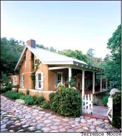
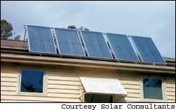

In the 1970s and ’80s, those of us involved with the solar movement focused on promoting renewable alternatives to fossil fuels and nuclear power. The research and experience coming out of that era was tremendous, and it will continue to serve us well over the next decade.
But our focus back then was too narrow - we could create houses with 100-percent solar heating and passive cooling, but we failed to adequately consider the rest of the picture. Would these buildings keep their occupants healthy? Were the buildings durable? How much “embodied” energy was consumed elsewhere to produce the materials used in these buildings? And what about other environmental impacts that result from where we build and the materials we use?
The green building movement, which took off in the late 1980s and early ’90s, is built on the solar movement but takes a decidedly broader view. Yes, we want to create low-energy buildings heated and powered by sunlight, but we also want to satisfy these other concerns to address much broader environmental priorities. Green building materials are an important part of this discussion.
Products can be considered “green” for many reasons. The raw materials used in making them may come from sources considered environmentally friendly: wood from certified, well-managed forests; recycled materials; and rapidly renewable agricultural fibers, for example. Some products are considered green because they are manufactured in a way that releases minimal pollutants or avoids toxic byproducts. Other products are green because they minimize the negative effects of construction (such as avoiding the need to excavate a foundation), or because they help a building minimize its use of energy or water. Products also can be green because they do not introduce pollutants into the built environment, or because they help remove pollutants.
The process of examining the environmental and health impacts of materials is referred to as life-cycle assessment (LCA). This emerging science considers a product’s environmental burdens throughout its life cycle - from resource extraction and manufacturing, through the use of the product, and ultimately to disposal or recycling it into a new product. Because most building materials are in use for a long period of time, the usage phase of a material’s LCA is particularly important. LCA is a highly complex science that we are only beginning to seriously investigate; European and Canadian researchers are well ahead of their U.S. counterparts in this regard.
The problem is that with so many different types of environmental and health impacts, when we compare products, we often are comparing apples to oranges. Even worse, we may be comparing the color of apples to the taste of oranges. The challenge in evaluating green building materials is in balancing the many environmental and health considerations to determine whether those materials should be considered green.
The Holy Grail of LCA for building products would be a database in which the life-cycle environmental impacts of different materials were fully quantified and the impacts weighed so that a builder or designer could easily see which material was better from an environmental standpoint. Though efforts have been started along these lines - one example is the Building for Environmental and Economic Sustainability (BEES) software developed by the National Institute of Standards and Technology (available for free download at www.bfrl.nist.gov/oae/software/bees.html) - we are not close to realizing that goal. We are a long way from a comprehensive, truly objective way to compare the greenness of building materials, but we still can make informed decisions regarding their selection.
Until we have a comprehensive LCA database that we can use to quantify the environmental characteristics of building materials, one way to identify green products is to rely on green labels or certifications for those products. Most such labels are specific to a particular type of product. Examples include certified wood from the Forest Stewardship Council (FSC), Energy Star appliances and office equipment, and GreenSeal labels on paint.
There also are a number of directories of green building products, including the online Oikos Green Product Directory from Iris Communications (www.oikos.com). My firm, BuildingGreen, offers the GreenSpec Directory, the newsletter Environmental Building News and a new residential directory, Green Building Products (to order, go to www.Mother
EarthNews.com).irectories such as these necessitate that editors use specific criteria to screen products for inclusion. The GreenSpec criteria are available for free download in the article “What makes a Product Green?” (www.buildinggreen.com/ features/gp/green_products.cfm).
Some green building products are more expensive than their nongreen counterparts. VOC-free (volatile organic compound) paints produce no significant pollutants, but require different chemical formulations that may cost more to manufacture or that may be produced in smaller volumes, such that manufacturers can’t benefit from economies of scale. Other green products are made from natural ingredients that are significantly more expensive, or from wood that is grown and harvested in environmentally sensitive ways that can cost more. With mechanical equipment and appliances, greener products have greater energy efficiency, which can require more expensive components or more elaborate configurations.
Not all green building products are more expensive, though. Plenty of them cost no more than their conventional counterparts - or even cost less. And as green products gain market share, economies of scale should bring down overall costs.
Alex Wilson is the president of BuildingGreen in Brattleboro, Vt., and executive editor of Environmental Building News. BuildingGreen (www.buildinggreen.com) publishes authoritative information on environmentally responsible building design and construction. This article is reprinted courtesy of Solar Today (www.solartoday.org).
With so many new building products now on the market, it’s hard to see through the hype. Thankfully, BuildingGreen, the award- winning publisher of the monthly, advertisement-free newsletter Environmental Building News, is here to help. The company publishes thousands of product reviews in directories and on its Web site. (Full access requires a subscription.) Here are EBN’s recent picks of top green building products.
ECO I Paver from E.P. Henry Corp. is an interlocking concrete-grid paver designed for porous paving applications. The pavers include protrusions (or lugs) on the sides to ensure separation between them for rainwater infiltration. Contact: E.P. Henry Corp., 201 Park Ave., P.O. Box 615, Woodbury, NJ 08096; (800) 444-3679; www.ephenry.com
TimberSIL is a sodium silicate-based pressure-treatment system for wood that relies on a mineralization process rather than toxins to prevent infestations and decay. Standard TimberSIL-treated wood carries a 40-year warranty for interior use and up to one year for outdoor exposure; TimberSIL Plus carries a 40-year warranty for outdoor applications. Contact: Timber Treatment Technologies, 7481 Huntsman Blvd., Suite 520, Springfield, VA 22153; (866) 318-9432; www.timbersil.com
Potlatch Corp. produces chain-of-custody, Forest Stewardship Council (FSC)-certified hem fir and Douglas fir-larch framing lumber, inland red cedar decking and siding, and Douglas fir and white fir plywood from three mills in Idaho. In 2004, Potlatch became the first publicly traded U.S. timber company to certify timberland according to FSC standards. Contact: Potlatch Corp., 805 Mill Road, Lewiston, ID 83504; (208) 799-1038; www.potlatchcorp.com
Ethos carpet-cushion backing sold by C&A Floorcoverings is made from nonchlorinated polyvinyl butyral (PVB) collected when automotive windows and other safety-glass panes are recycled. This material is 96-percent post-consumer recycled, resulting in carpet products with a total recycled content of 40 percent to 62 percent. Contact: Tandus C&A Floorcoverings, P.O. Box 1447, Dalton, GA 30722; (800) 248-2878; www.tandus.com
Photovol glass is a semitransparent, building-integrated photovoltaic (BIPV) window glazing that allows visible light transmission while generating electricity. The roughly 1-square-meter glazing panels are available in three transmissivity and electrical output options: 10-percent transmittance with nominal 44 watts of power output, 5-percent transmittance with 50-watt output and 1-percent transmittance with 55-watt output. The power output is guaranteed at 80 percent of the rated output for 20 years. Contact: Darshan Schmitz, International Sales, MSK Corp.; darshan@msk.ne.jp; www.msk.ne.jp/english/index.shtml
The Winston Series CPC collector is a solar water-heating system composed of 12 small compound parabolic collectors (CPC) that focus sunlight onto absorber tubes through which heat-transfer fluid is piped. Contact: Solargenix Energy, 2101-115 Westinghouse Blvd., Raleigh, NC 27604; (919) 871-0423; www.solargenix.com
These pressure-assist toilets have an inner airtight flushometer tank that is pressurized after the flush as the tank refills (air is compressed at the top of the tank).uring the flush operation, air pressure flushes the toilet with increased velocity, improving flush performance. The Sloan Valve Co.’s 1-gallon-per-flush (gpf) FlushMate IV mechanism for pressure-assist toilets still produces a distinctive “whoosh” during the flush, but is quieter than the higher-volume flushometer-tank toilets. The Sloan FlushMate IV flushometer is currently used in toilets manufactured by Mansfield, Capizzi, Mancesa, St. Thomas Creations (Vitromex) and Vortens, with other manufacturers expected to introduce FlushMate IV products in 2005. Contact: Sloan Valve Co., 10500 Seymour Ave., Franklin Park, IL 60131; (800) 982-5839; www.sloanvalve.com
This multiple-stage, cold-climate air-source heat pump rivals many ground-source (geothermal) heat pumps in performance, achieving an average coefficient of performance (COP) of 2.7. The system takes full advantage of the non-ozone-depleting refrigerant R-410a, which can withstand up to 70-percent higher pressure and has a 40-percent better cooling capacity than R-22 (which depletes ozone and is scheduled to be phased out starting in 2010). Contact: Nyle Special Products, P.O. Box 1107, Bangor, ME 04402; (207) 942-2865; www.nyletherm.com
|
 Solargenix Energy’s Winston Series solar water-heating system uses compound parabolic collectors to intensify the heating effect of sunlight. |
 |
|